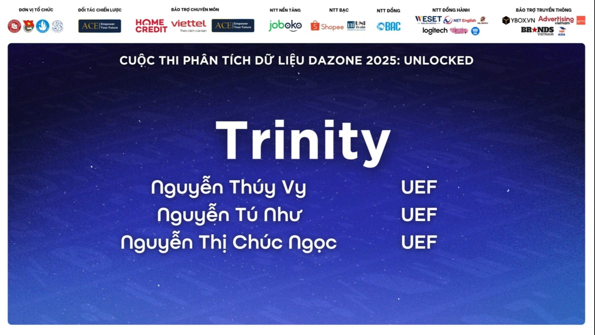
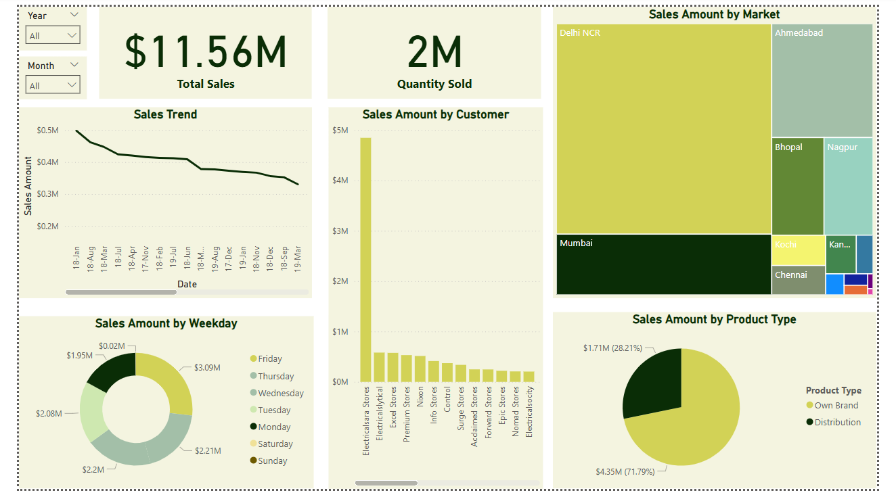
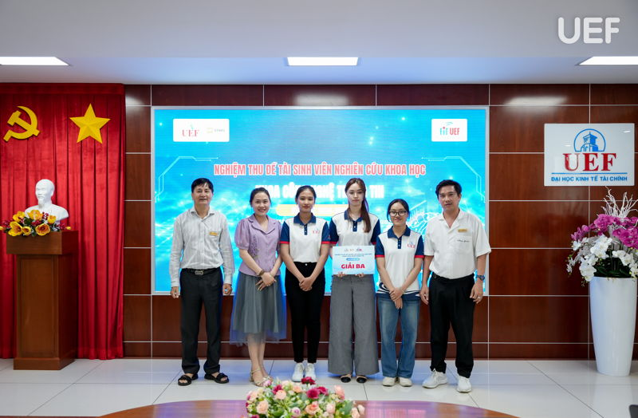
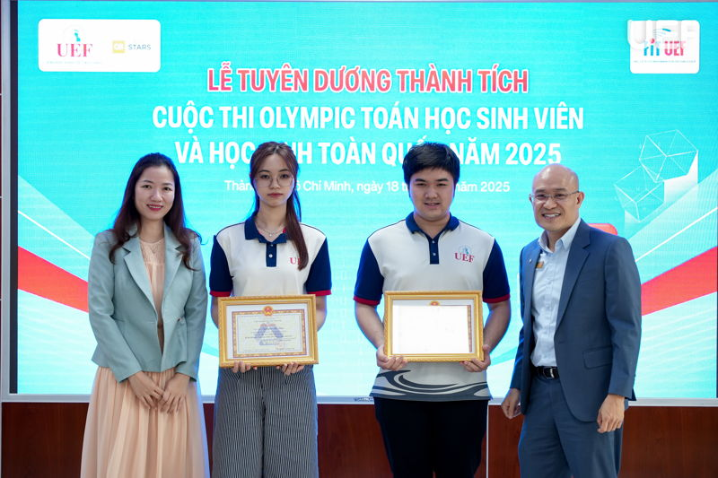
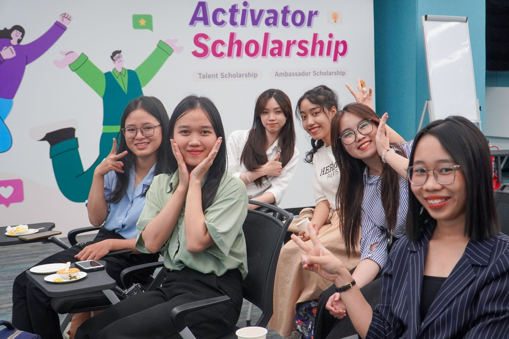
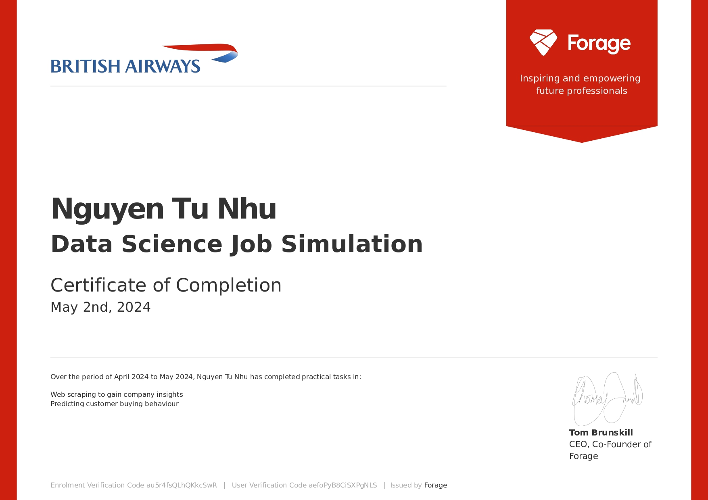
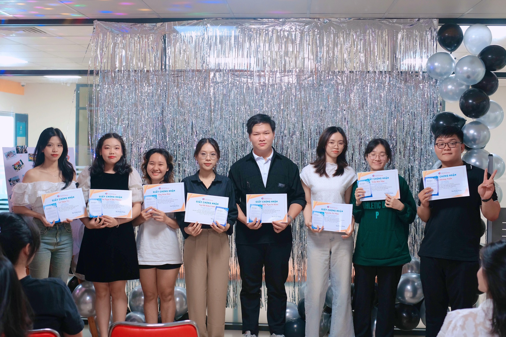

Nguyen Tu Nhu
Data Science Student | Aspiring Data Analyst | Excel, SQL, R, Python, Power BI, Tableau
- Email: nguyentunhu0886@gmail.com
- LinkedIn: Nguyễn Tú Như
- GitHub: nguyentunhu
Projects

Top 10 Finalist – DAZONE 2025 (FTU2): National Data Analytics Competition
Time: June 2025
- Processed a 4GB e-commerce dataset with missing, duplicate, and unstructured entries
- Identified patterns of deal hunters and loyal customers
- Proposed strategic recommendations for product promotion and customer retention based on data

Power BI Dashboard of Retail Analysis
Time: Jun 2025
This Power BI retail dashboard was developed to address a common business question: “How can we gain clear insights into sales performance and customer behavior across time, regions, and product categories?”
- Connected Power BI to a MySQL database to enable real-time data access
- Used Power Query and DAX for data cleaning, transformation, and advanced metric calculation
- Built an interactive dashboard for dynamic exploration of sales by region, period, and customer
View DashboardCrawling E-commerce platforms' Customer reviews
Time: May 2025
- Developed Python-based functions to automate the collection of 600+ product reviews from Vietnamese e-commerce platforms (Thegioididong, Cellphones, Tinhte)
- Implemented bot-detection logic to filter out non-authentic comments
- Maintained a changelog to document crawler updates and version history
View Project on GitHub
Student Scientific Research Competition by Faculty of Information Technologym UEF
Time: Apr 2025
“Data Analysis on YouTube videos”: Application of Data Processing tools and Machine Learning algorithms to analyze users' behaviors on top YouTube popular videos.
View Article
National Mathematics Olympiad for Students
Time: Apr 2025
Third Prize on Calculus.
- National-level competition recognizing top university math students in Vietnam
- Awarded Third Prize for outstanding performance in calculus and problem-solving under timed conditions
Fraud Detection on Credit Card Transactions
Time: Feb 2025
- Analyzed 200K+ financial transactions using Python and scikit-learn
- Built and compared Logistic Regression, Decision Tree, and Random Forest models
- Handled data imbalance with oversampling techniques
- Evaluated model performance using accuracy, F1-score, and recall, improving F1-score to 0.89
View Project on GitHubSynthetic Financial Dataset EDA
Time: Jan 2025
- Cleaned synthetic data by handling missing values, type conversions, and duplicates
- Conducted exploratory data analysis using Pandas, Matplotlib, and Seaborn
- Delivered data summaries to support feature engineering for future modeling tasks
View Project on GitHub
Bosch Activator Scholarship Ambassador
Time: Dec 2024
- Collaborated with cross-functional peers and mentors through three-phase project development
- Developed a solution to leverage Bosch capabilities to enable future generations (enhance education access in rural areas)

Data Science Stimulation Job by British Airways
Time: May 2024
- Completed a real-world case project simulating a British Airways data analyst role
- Analyzed over 1,000 customer reviews to identify satisfaction drivers
- Built a Random Forest model achieving 92% accuracy in predicting customer satisfaction
- Presented insights through professional slides tailored for business stakeholders
View Certificate
Volunteer Math Teacher of UEF Service-Learning Center
Time: Jan - Jun 2024
- Delivered weekly Math and English lessons to underserved students in rural communities
- Conducted interactive learning sessions, increasing students’ academic performance by 30%
- Collaborated with 30+ volunteers to plan and execute educational initiatives impacting 50+ students